Measuring transcription in a SCRaMbLEd genome with Nanopore sequencing
Steinmetz and Stegle Groups, EMBL Heidelberg
...in the not too distant future
you are building a genome from scratch...
Where are you going to put the genes? In what order and which orientation? Does it matter?
Transcription is linked to genome architecture

Regulatory signals can propagate between neighbouring promoters
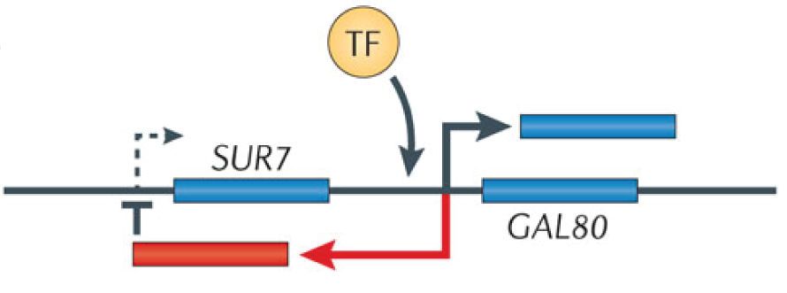Antisense-mediated regulation of SUR7
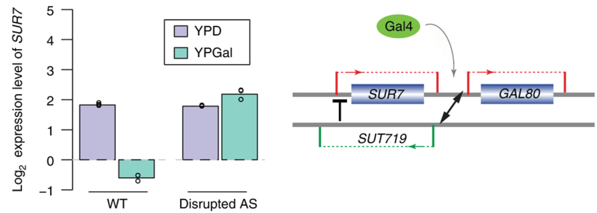Conservation of organization despite regulatory divergence
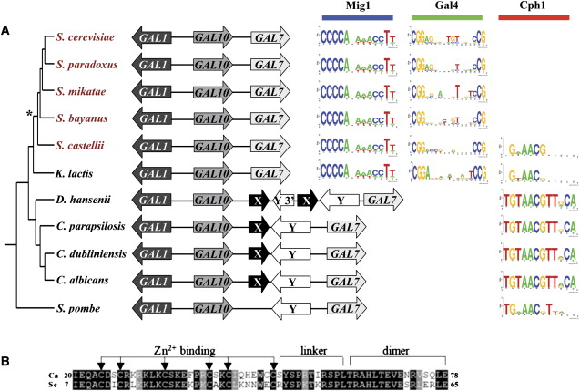“...gene shuffling could be evolutionarily restricted in regions that support beneficial interactions between loci, whereas in other regions, new rearrangements could give rise to novel interaction networks that are mediated by ncRNAs and antisense transcripts.”
Why are genomes organized as we observe them?
Gene shuffling with SCRaMbLE
Synthetic Chromosome Recombination and Modification by LoxP-mediated Evolution
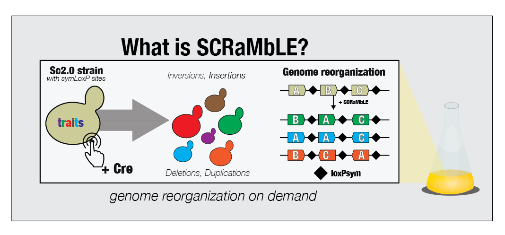"A big step towards an artificial yeast genome"

"Remodeling the yeast genome piece by piece"
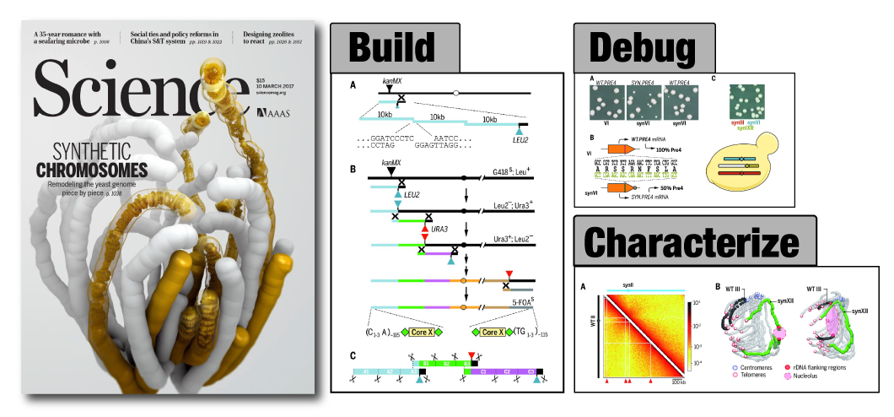Synthetic Yeast Genome Project (Sc2.0) Science Special Issue
International consortium for design and synthesis
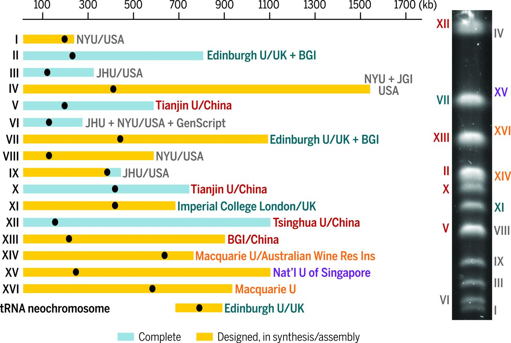...synthesis is ongoing...
Encode sequence diversity by design: Sc2.0

Gene shuffling with SCRaMbLE
Synthetic Chromosome Recombination and Modification by LoxP-mediated Evolution

Extensive heterogeneity among SCRaMbLE strains

How is the transcriptional landscape modified by genome SCRaMbLEing?

What is the sequence of a SCRaMbLEd genome?
 Andreas
Andreas
64 strains derived from SCRaMbLE of SynIXR

Each genome segment identified by color and number. ~1 gene per segment. SCRaMbLEgram
Many genomes cannot be assembled fully with short reads
JS734 has four potential solutions

Workflow for de novo assembly with long-reads
Parental strain (JS94) can be solved with single SMRT cell

Our Nanopore sequencing output is below average
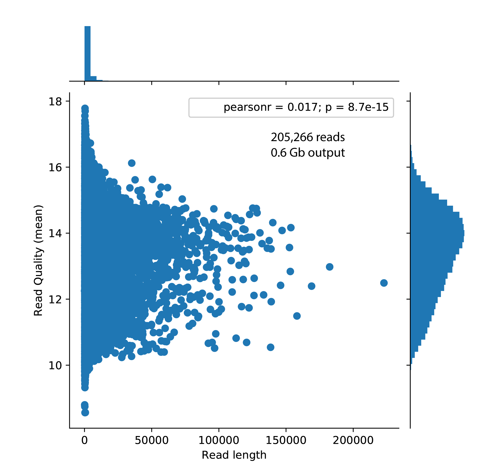Near complete assembly of SCRaMbLE genomes with long-reads
**JS734 could only be solved by aggregating data from several SMRT cells**
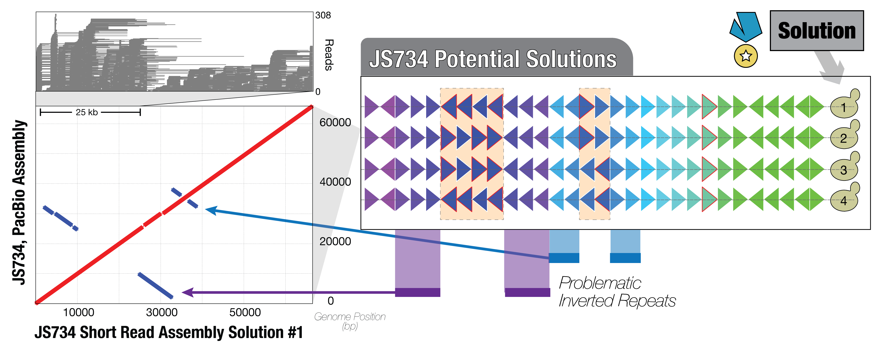Complete assembly achieved frequently at high coverage for JS734
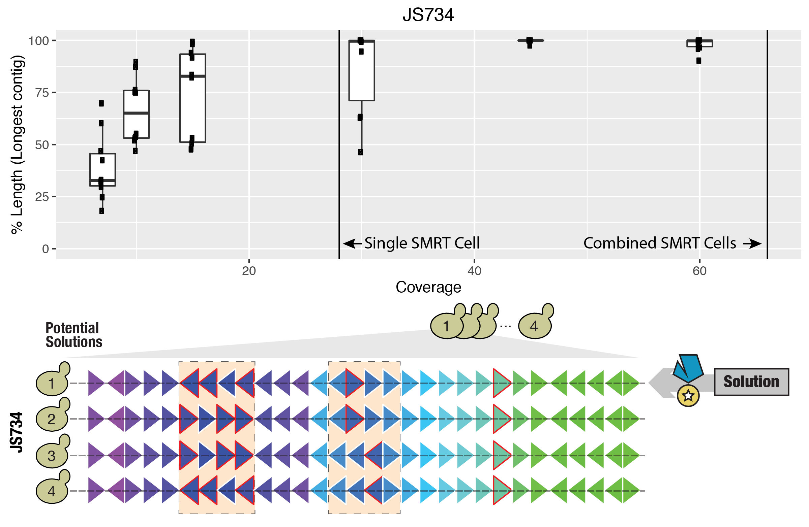Some SCRaMbLE genomes are full of inverted repeats
Will increased coverage still lead to complete assembly?

Some strains require a combination of depth and increased read length

Variable difficulty of de novo assembly for SynIXR SCRaMbLEs

Fixed mean read length = 3.98 kb

How is a SCRaMbLEd genome transcribed?
Andreas
Sandra
Sequencing methods to measure changes in the transcriptome
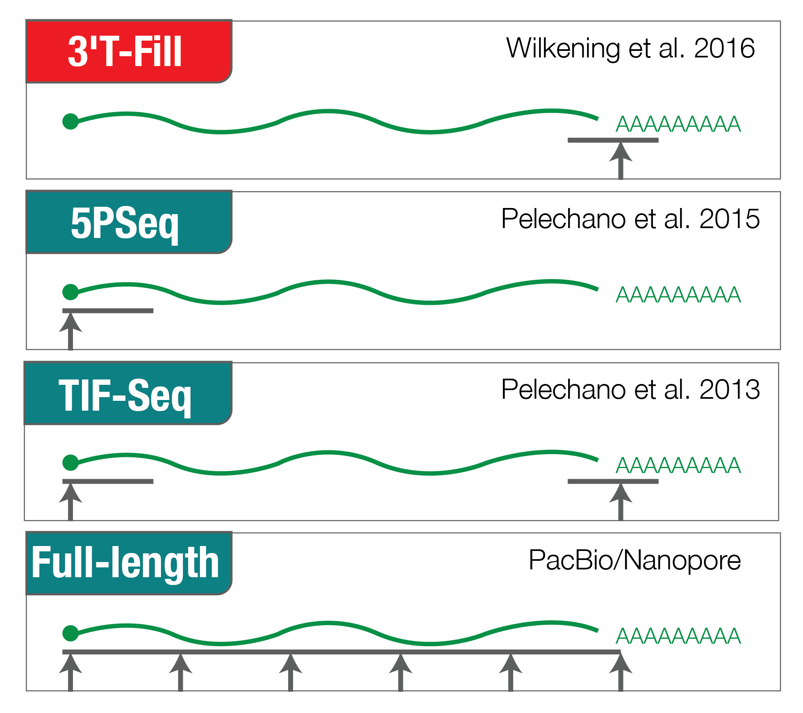SynIXR SCRaMbLE Strains

Mapping 3'-ends is problematic with short reads

SCRaMbLEd SynIXR 3'-ends vary
Kernel PCA (Cosine kernel) from 22 segments represented in all strains
Sequencing methods to measure changes in the transcriptome

Multiple options for full-length RNA prep
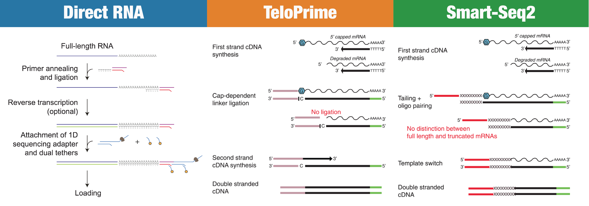Are Smart-Seq2 reads not full-length?
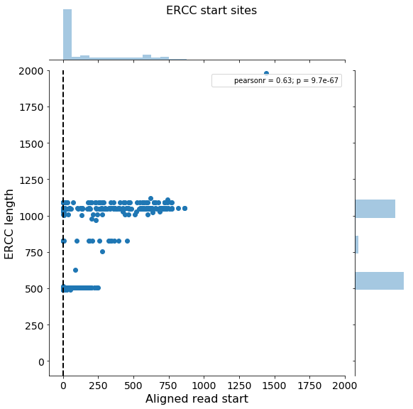Transcriptome qualitatively different depending on prep
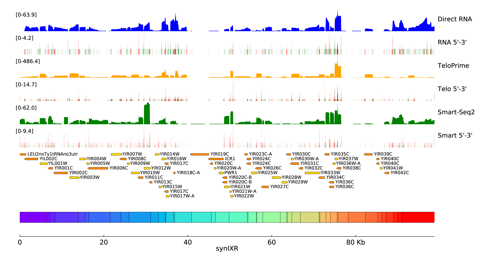Strand-specificity with direct RNA sequencing
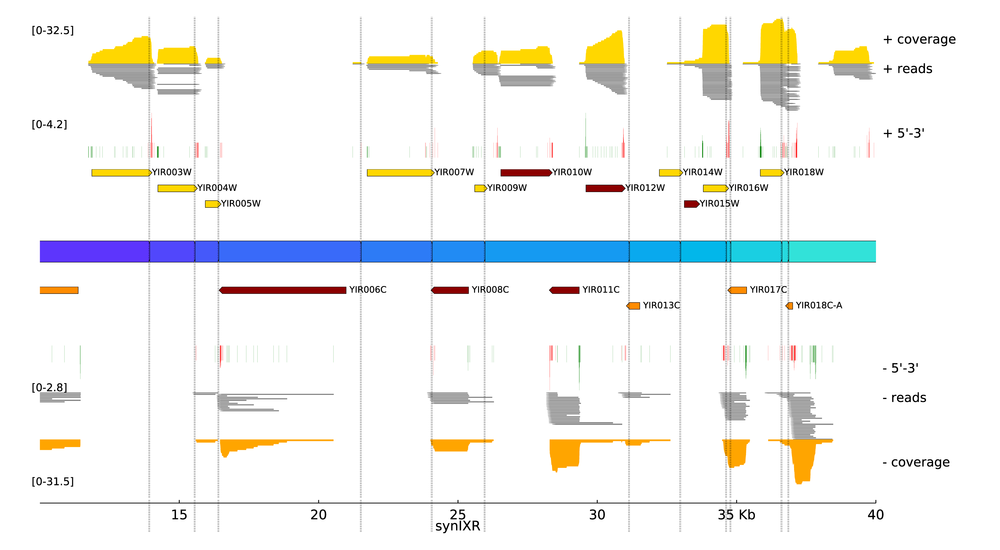 Full-length transcript isoform sequencing:
global properties
Small differences in read lengths and quality
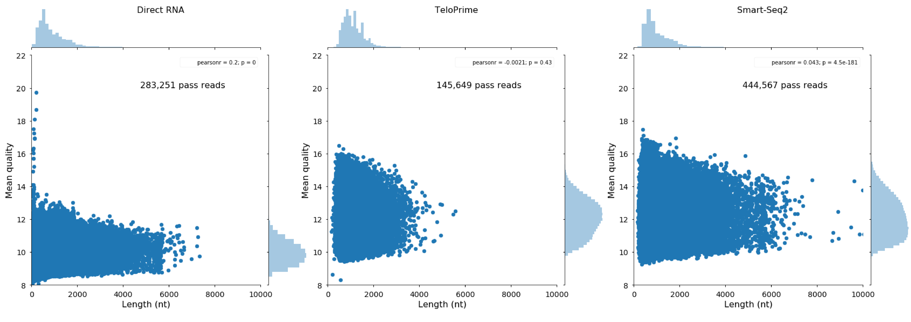Global genic 5'-end profile

Global genic 3'-end profile
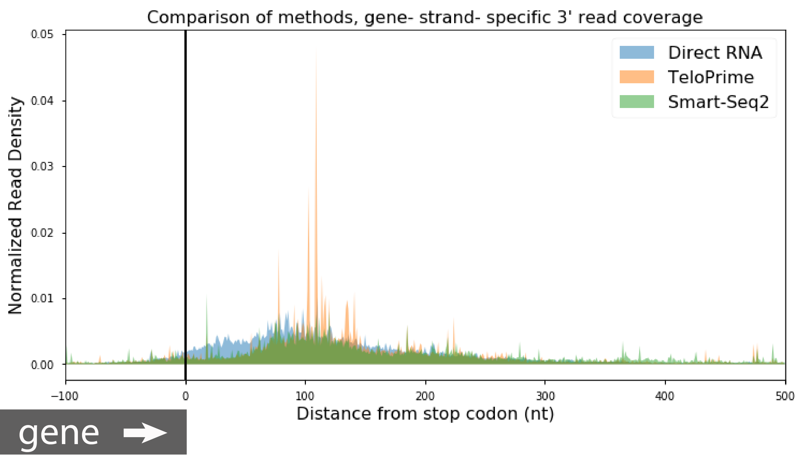What fraction of the genome is expressed?
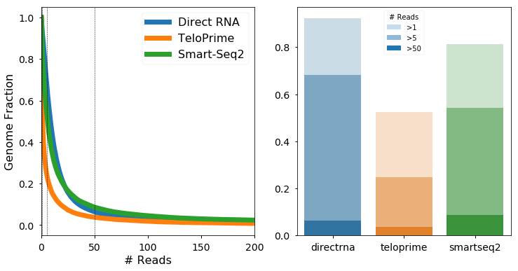"A total of 85% of the genome is expressed in rich media."
Rediscovery of previously described transcript isoforms
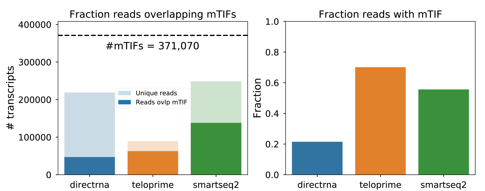New transcriptional landscape in SCRaMbLEd cells
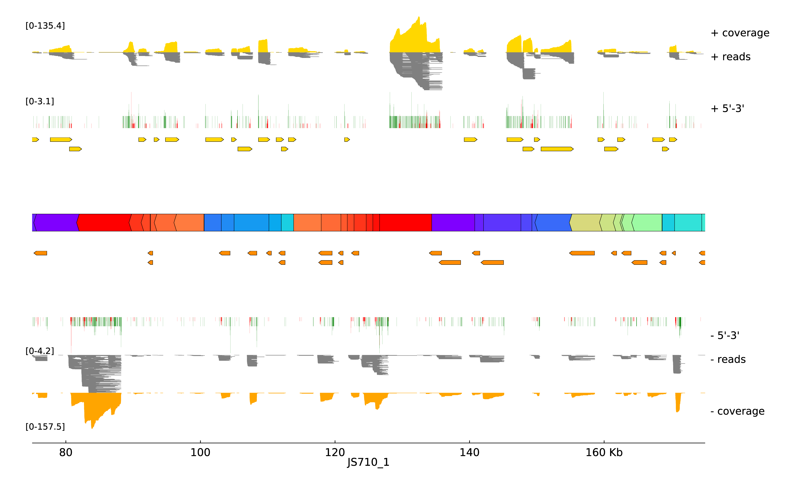 Getting Smart with UMIs:
UMIs for Smart-Seq2
Dual UMIs can account for high error rate with Nanopore
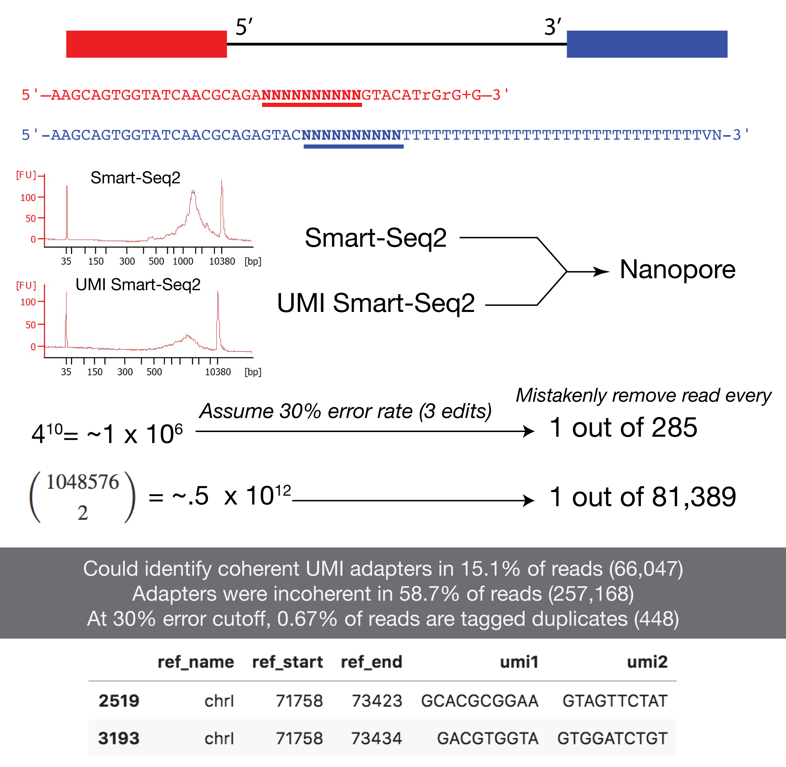Summary
-
Direct RNA sequences "everything", is inherently strand-specific, no PCR
-
TeloPrime is specific for capped molecules, protocol has to be modified to achieve Nanopore input requirements
-
Smart-Seq2 can amplify degradation products and possibly other non-full-length transcripts, but...
- We can use dual UMIs with Smart-Seq2 to identify PCR duplicates